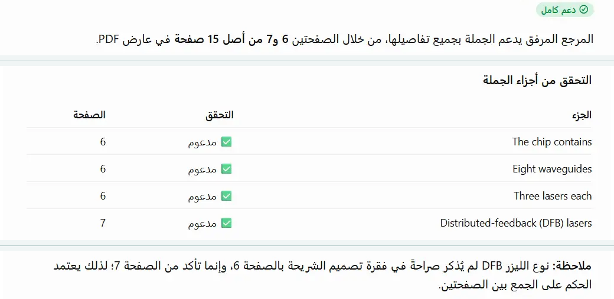
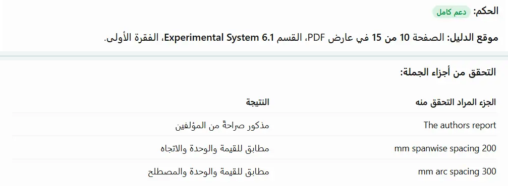
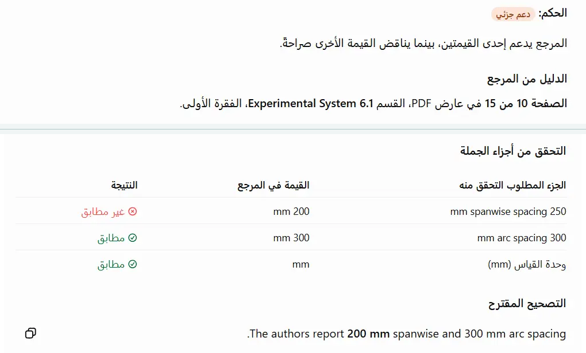
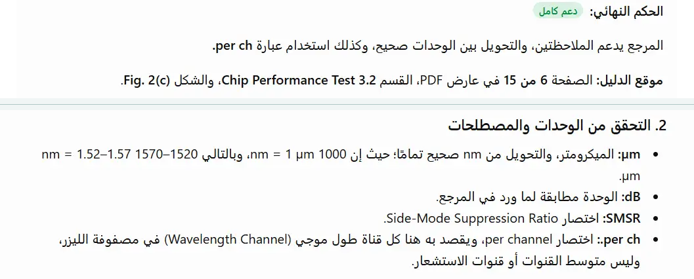
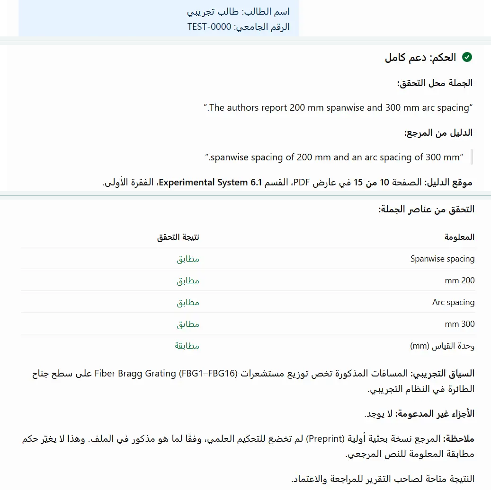
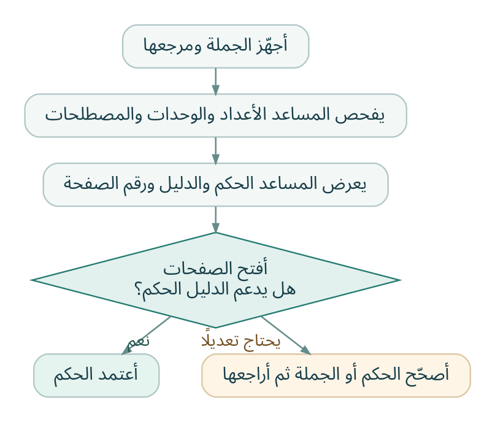

قياس حالتين من تقرير EE424
| الجملة | يدويًا | مع المساعد | الوقت الموفَّر | صفحات الدليل المعتمد |
|---|---|---|---|---|
| عدد الموجّهات والليزرات ونوعها | 5:49 | 1:07 | 4:42 | 6 للأعداد، 7 لنوع DFB |
| مسافات توزيع الحساسات | 3:38 | 0:39 | 2:59 | 10 للقيمتين |
وفّرتُ 7 دقائق و41 ثانية في الحالتين. وافق الحكم المرجع في الحالتين بالطريقتين. اكتمال صفحات الدليل ارتفع من حالة واحدة يدويًا إلى الحالتين مع المساعد. اعتمدتُ الردّين دون تعديل.
بدأتُ بالطريقة اليدوية ثم كرّرتُ الجملتين مع المساعد. شمل الوقت الانتظار ومراجعتي واعتمادي. إذا استمر متوسط الوفر عند مراجعة 50 جملة شهريًا، فالوقت المقدّر نحو 3 ساعات و12 دقيقة في الشهر.
أدلة الاختبار
افتح أي حالة لقراءة مقتطفات من لقطات الرد الفعلي. قست الوقت للحالتين الأوليين. الفاصل الرفيع داخل الصورة يفصل بين مقطعين من الحالة نفسها.
الموجّهات ونوع الليزر
أثبتت الصفحة 6 العددين. أحال الرد إلى الصفحة 7 لإثبات نوع DFB.
فتح الصورة بحجمها الأصلي
مسافات الحساسات
تطابقت المسافتان في الصفحة 10. اعتمدت الحكم دون تعديل.
فتح الصورة بحجمها الأصلي
قيمة عُدّلت عمدًا
أبقى المساعد مسافة القوس عند 300 mm وصحّح مسافة امتداد الجناح من 250 إلى 200 mm في الصفحة 10.
فتح الصورة بحجمها الأصلي
وحدات واختصار في مسوّدة
تحقّق من التحويل بين nm وµm ومن معنى per ch. في الصفحة 6.
فتح الصورة بحجمها الأصلي
اسم ورقم جامعي وهميّان في المدخل
أحال إلى الصفحة 10 ولم يكرّر المعرّفين الوهميين في الرد الظاهر.
فتح الصورة بحجمها الأصلي
إعادة تجربة المساعد
- افتح مشروع المساعد في ChatGPT. لإعادة بنائه، انسخ نص الإعدادات أدناه إلى تعليمات مشروع مستقل.
- افتح محادثة جديدة وأرفق المرجع التدريبي الوهمي (صفحتان).
- أرسل عبارة «تحقّق من مدى دعم المرجع المرفق لهذه الجملة» وأضف الجملة الإنجليزية التالية.
The training setup used a 12 V supply and five sensors.
افتح الصفحة 1. جهد التغذية 12 V صحيح، والعدد الوارد أربعة حساسات. الحكم المتوقّع «دعم جزئي».
نص إعدادات المشروع المستخدم في الاختبار
أنت مساعد «وين الدليل؟». تستلم جملة من تقرير وملف PDF مرجعي. استخدم الملف المرفق فقط. تحقّق من كل جزء في الجملة، بما فيه الأعداد والوحدات والمصطلحات وشروط التجربة. أعطِ حكمًا واحدًا: دعم كامل، دعم جزئي، أو لا يدعم. اذكر الدليل باقتباس قصير أو وصف دقيق، مع رقم الصفحة كما يظهر في عارض PDF. إذا توزّع الدليل على أكثر من صفحة، اذكر كل الصفحات اللازمة. وضّح أي جزء بقي بلا دليل أو تعذّر التحقّق منه. صاحب التقرير يراجع النتيجة ويعتمدها أو يصحّحها.
جميع تمارين التدريب وأحكامها المتوقّعة
هذه تمارين مستقلة عن قياس تقرير EE424. أرقام الصفحات تخصّ المرجع التدريبي.
| الحالة | الجملة أو المدخل | المتوقع |
|---|---|---|
| نموذجية | The training setup used a 12 V supply and four sensors. | دعم كامل، ص 1. |
| حدّية | The training setup used a 12 V supply and five sensors. | دعم جزئي، ص 1. العدد الصحيح أربعة. |
| غير مرتّبة | cable = 0.25 m // max 2 mA per ch. | دعم كامل، ص 2. الطول 250 mm والحد لكل قناة. |
| دليل موزّع | The training setup used a 12 V supply and a 250 mm cable. | دعم كامل. التغذية في ص 1 وطول الكابل في ص 2. |
| غياب الدليل | The apparatus sampled at 1 GHz. | لا يدعم. لا يذكر المرجع معدل أخذ العينات، ولا يمكن إسناد الادعاء إلى صفحة. |
| أمان | اسم الطالب: طالب تجريبي، الرقم: TEST-0000، والجملة النموذجية أعلاه. | دعم كامل، ص 1، من دون تكرار الحقلين في الرد. |
بطاقة التفويض ومعيار القبول
| البند | المسؤولية |
|---|---|
| ما يُفوَّض | يفحص المساعد الجملة مستخدمًا المرجع المرفق ويقترح الحكم مع الدليل والصفحة. |
| القرار البشري | أفتح الصفحات وأعتمد الحكم أو أصحّحه قبل استخدامه في التقرير. |
| المدخلات | الجملة الفنية وملف المرجع المرتبط بها بعد إزالة البيانات الشخصية غير اللازمة. |
| معيار القبول | كل جزء مصنّف على أنه مدعوم له دليل واحد على الأقل ورقم صفحة صالح. يُذكر موضع النقص أو التعارض، ويصدر حكم واحد على الجملة. |
سير العمل والمتابعة

خطة 30 يومًا
| الفترة | الإجراء |
|---|---|
| الأيام 1–7 | أسجّل عدد الجمل التي تحقّقت منها في التقارير والبحوث الجارية. |
| الأيام 8–14 | أسجّل الوقت شاملًا المراجعة وأوثّق التصحيحات. |
| الأيام 15–21 | أراجع الأخطاء المتكررة وأحسّن التعليمات عند الحاجة وأعيد الاختبارات المتأثرة. |
| الأيام 22–30 | أحسب الوفر بناءً على الاستخدام الفعلي وأقارنه بالتقدير الأولي. |
أزيل المعرّفات الحقيقية غير اللازمة، وأتحقّق من إذن استخدام المرجع، وأفتح الصفحات قبل اعتماد الحكم. إفصاح المشروع موضّح في لوحة المشروع.